COCO: The Large Scale Black-Box Optimization Benchmarking (bbob-largescale) Test Suite¶
See also: ArXiv e-prints,
arXiv:XXXX.XXXXX, 2019.The bbob-largescale test suite, containing 24 single-objective
functions in continuous domain, extends the well-known
single-objective noiseless bbob test suite [HAN2009], which has been used since 2009 in
the BBOB workshop series, to large dimension. The core idea is to make the rotational
transformations 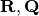 in search space that
appear in the bbob test suite computationally cheaper while retaining some desired
properties. This documentation presents an approach that replaces a full rotational transformation with a combination of a block-diagonal matrix and two permutation matrices in order to construct test functions whose computational and memory costs scale linearly in the dimension of the problem.
Introduction¶
In the bbob-largescale test suite, we consider single-objective, unconstrained minimization problems
of the form
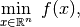
with problem dimensions 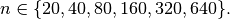
The objective is to find, as quickly as possible, one or several solutions  in the search
space 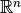 with small value(s) of 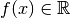. We
generally measure the time of an optimization run as the number of calls to (queries of) the objective function
in the search
space 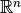 with small value(s) of 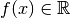. We
generally measure the time of an optimization run as the number of calls to (queries of) the objective function  .
.
We remind in the next sections some notations and definitions.
Terminology¶
- function
- We talk about an objective function as a parametrized mapping
with scalable input space, that is,
 is not (yet) determined. Functions are parametrized such that
different instances of the “same” function are available, e.g. translated
or rotated versions.
is not (yet) determined. Functions are parametrized such that
different instances of the “same” function are available, e.g. translated
or rotated versions. - problem
- We talk about a problem,
coco_problem_t, as a specific function instance on which an optimization algorithm is run. Specifically, a problem can be described as the triple(dimension, function, instance). A problem can be evaluated and returns an-value. In the context of performance
assessment, a target - or indicator-value is attached to each problem.
That is, a target value is added to the above triple to define a single problem
in this case. - runtime
- We define runtime, or run-length as the number of evaluations conducted on a given problem, also referred to as number of function evaluations. Our central performance measure is the runtime until a given target value is hit.
- suite
- A test- or benchmark-suite is a collection of problems, typically between twenty and a hundred.
Functions, Instances and Problems¶
Each function is parametrized by the (input) dimension, , its identifier  , and the instance number,
, and the instance number,  ,
that is:
,
that is:
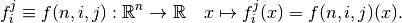
Varying or leads to a variation of the same function of a given suite.
By fixing and for function  , we define an optimization problem
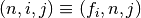 that can be presented to the optimization algorithm.
Each problem receives again an index in the suite, mapping the triple 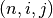 to a single
number.
, we define an optimization problem
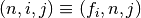 that can be presented to the optimization algorithm.
Each problem receives again an index in the suite, mapping the triple 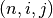 to a single
number.
We can think of as an index to a continuous parameter vector setting,
as it parametrizes, among others things, translations and rotations. In
practice, is the discrete identifier for single instantiations of
these parameters.
Runtime and Target Values¶
In order to measure the runtime of an algorithm on a problem, we
establish a hitting time condition.
For a given problem 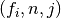, we prescribe a target value  as a specific -value
of interest [HAN2016perf].
For a single run, when an algorithm reaches or surpasses the target value
on problem , we say that it has solved the problem 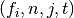 — it was successful. [1]
as a specific -value
of interest [HAN2016perf].
For a single run, when an algorithm reaches or surpasses the target value
on problem , we say that it has solved the problem 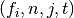 — it was successful. [1]
The runtime is, then, the evaluation count when the target value was
reached or surpassed for the first time.
That is, the runtime is the number of -evaluations needed to solve the problem
. [2]
Measured runtimes are the only way how we assess the performance of an
algorithm.
Observed success rates are generally translated into runtimes on a subset of
problems.
If an algorithm does not hit the target in a single run, its runtime remains undefined — while, then, this runtime is bounded from below by the number of evaluations in this unsuccessful run. The number of available runtime values depends on the budget the algorithm has explored (the larger the budget, the more likely the target-values are reached). Therefore, larger budgets are preferable — however they should not come at the expense of abandoning reasonable termination conditions. Instead, restarts should be done [HAN2016ex].
| [1] | Note the use of the term problem in two meanings: as the problem the
algorithm is benchmarked on, , and as the problem, , an algorithm can
solve by hitting the target with the runtime, 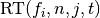, or may fail to solve.
Each problem gives raise to a collection of dependent problems .
Viewed as random variables, the events given are not
independent events for different values of . |
| [2] | Target values are directly linked to a problem, leaving the burden to
properly define the targets with the designer of the benchmark suite.
The alternative is to present final -values as results,
leaving the (rather unsurmountable) burden to interpret these values to the
reader.
Fortunately, there is an automatized generic way to generate target values
from observed runtimes, the so-called run-length based target values
[HAN2016perf]. |
Overview of the Proposed bbob-largescale Test Suite¶
The bbob-largescale test suite provides 24 functions in six dimensions (20, 40, 80, 160, 320 and 640) within
the COCO framework [HAN2016co]. It is derived from the existing single-objective, unconstrained bbob test suite with
modifications that allow the user to benchmark algorithms on high dimensional problems efficiently.
We will explain in this section how the bbob-largescale test suite is built.
The single-objective bbob functions¶
The bbob test suite relies on the use of a number of raw functions from
which 24 bbob functions are generated. Initially, so-called raw functions
are designed. Then, a series of transformations on these raw functions, such as
linear transformations (e.g., translation, rotation, scaling) and/or non-linear
transformations (e.g., 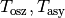)
will be applied to obtain the actual bbob test functions. For example, the test function
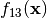 (Sharp Ridge function) with (vector) variable  is derived from a raw function defined as follows:
is derived from a raw function defined as follows:
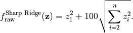
Then one applies a sequence of transformations:
a translation by using the vector 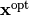;
then a rotational transformation  ; then a scaling transformation
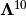; then another rotational transformation
; then a scaling transformation
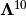; then another rotational transformation  to get the relationship
to get the relationship
 ; and finally
a translation in objective space by using 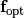 to obtain the final
function in the testbed:
; and finally
a translation in objective space by using 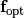 to obtain the final
function in the testbed:
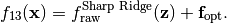
There are two main reasons behind the use of transformations here:
- provide non-trivial problems that cannot be solved by simply exploiting some of their properties (separability, optimum at fixed position, ...) and
- allow to generate different instances, ideally of similar difficulty, of the same problem by using different (pseudo-)random transformations.
Rotational transformations are used to avoid separability and thus coordinate system dependence in the test functions.
The rotational transformations consist in applying
an orthogonal matrix to the search space: 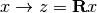, where  is the
orthogonal matrix.
While the other transformations used in the
is the
orthogonal matrix.
While the other transformations used in the bbob test suite could be naturally extended to
the large scale setting due to their linear complexity, rotational transformations have quadratic time and
space complexities. Thus, we need to reduce the complexity of these transformations in order for them to be usable, in practice, in the large scale setting.
Extension to large scale setting¶
Our objective is to construct a large scale test suite where the cost of a function call is
acceptable in higher dimensions while preserving the main characteristics of the original functions in the bbob
test suite.
To this end, we will replace the full orthogonal matrices of the rotational transformations,
which would be too expensive in our large scale setting, with orthogonal transformations
that have linear complexity in the problem dimension: permuted orthogonal block-diagonal matrices ([AIT2016]).
Specifically, the matrix of a rotational transformation
will be represented as:
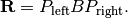
Here, 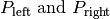 are two permutation matrices [3] and  is a
block-diagonal matrix of the form:
is a
block-diagonal matrix of the form:
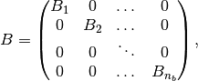
where 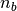 is the number of blocks and 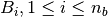
are square matrices of sizes 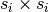 satisfying 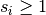
and 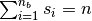. In this case, the matrices
are all orthogonal. Thus, the matrix
is also an orthogonal matrix.
This representation allows the rotational transformation to satisfy three
desired properties:
- Have (almost) linear cost (due to the block structure of ).
- Introduce non-separability.
- Preserve the eigenvalues and therefore the condition number of the original function when it is convex quadratic (since is orthogonal).
| [3] | A permutation matrix is a square binary matrix that has exactly one entry of 1 in each row and each column and 0s elsewhere. |
Generating the orthogonal block matrix ¶
The block-matrices 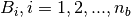 will be uniformly distributed in the set of
orthogonal matrices of the same size. To this end, we first generate square matrices with
sizes  (i=1,2,...,n_b) whose entries are i.i.d. standard normally distributed.
Then we apply the Gram-Schmidt process to orthogonalize these matrices.
(i=1,2,...,n_b) whose entries are i.i.d. standard normally distributed.
Then we apply the Gram-Schmidt process to orthogonalize these matrices.
The parameters of this procedure include:
- the dimension of the problem ,
- the block sizes 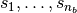, where is the number of blocks. In this test suite, we set 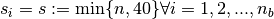 (except, maybe, for the last block which can be smaller) [4] and thus 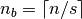.
| [4] | This setting allows to have the problems in dimensions 20 and 40 overlap between the bbob test suite and its large-scale extension since in these dimensions, the block sizes coincide with the problem dimensions. |
Generating the permutation matrices  ¶
¶
In order to generate the permutation matrix , we start from the identity matrix and apply, successively, a set of so-called truncated uniform swaps.
Each row/column (up to a maximum number of swaps) is swapped with a row/column chosen uniformly from the set of rows/columns within a fixed range  .
A random order of the rows/columns is generated to avoid biases towards the first rows/columns.
.
A random order of the rows/columns is generated to avoid biases towards the first rows/columns.
Let be the index of the first
variable/row/column to be swapped and be the index of the second swap variable. Then
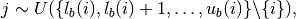
where 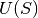 is the uniform distribution over the set  and 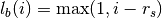
and 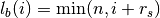 with a parameter of the approach.
If 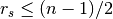, the average distance between
the first and the second swap variable ranges from
and 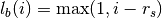
and 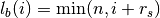 with a parameter of the approach.
If 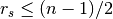, the average distance between
the first and the second swap variable ranges from  (in the case of an
asymmetric choice for , i.e. when is chosen closer to
(in the case of an
asymmetric choice for , i.e. when is chosen closer to  or than ) to
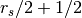 (in the case of a symmetric choice for ). It is maximal when the first swap variable is at least
away from both extremes or is one of them.
or than ) to
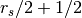 (in the case of a symmetric choice for ). It is maximal when the first swap variable is at least
away from both extremes or is one of them.
Algorithm 1 below describes the process of generating a permutation using a series of truncated uniform swaps with the following parameters:
- , the number of variables,
 , the number of swaps.
, the number of swaps.- , the swap range.
Starting with the identity permutation  and another permuation
and another permuation  , drawn uniform
at random, we apply the swaps defined above
by taking 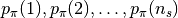, successively, as
first swap variable. The resulting vector will be the desired permutation.
, drawn uniform
at random, we apply the swaps defined above
by taking 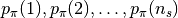, successively, as
first swap variable. The resulting vector will be the desired permutation.
Algorithm 1: Truncated Uniform Permutations
- Inputs: problem dimension , number of swaps , swap range

- Output: a vector 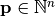, defining a permutation.
- 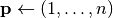
- Generate a permutation uniformly at random
- 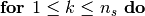
- 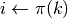, i.e., 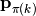 is the first swap variable
- 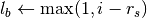
- 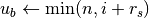
- 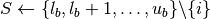
- Sample uniformly at random in
- Sample
- Swap 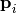 and 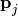
In this test suite, we set 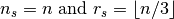. Some numerical
results in [AIT2016] show that with such parameters, the proportion of variables that are
moved from their original position when applying Algorithm 1 is approximately 100% for all
dimensions 20, 40, 80, 160, 320, and 640 of the bbob-largescale test suite.
Implementation¶
Now, we describe how these changes to the rotational transformations are implemented
with the realizations of 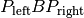.
This will be illustrated through an example
on the Ellipsoidal function (rotated)  (see the table in the next section), which is defined by
(see the table in the next section), which is defined by
as follows:
(i) First, we obtain the three matrices needed for the transformation,  ,
as follows:
,
as follows:
coco_compute_blockrotation(B, seed1, n, s, n_b); coco_compute_truncated_uniform_swap_permutation(P1, seed2, n, n_s, r_s); coco_compute_truncated_uniform_swap_permutation(P2, seed3, n, n_s, r_s);
- Then, whereever in the
bbobtest suite, we use the following
problem = transform_vars_affine(problem, R, b, n);to make a rotational transformation, then in the
bbob-largescaletest suite, we replace it with the three transformationsproblem = transform_vars_permutation(problem, P2, n); problem = transform_vars_blockrotation(problem, B, n, s, n_b); problem = transform_vars_permutation(problem, P1, n);
Here, is again the problem dimension,  the size of the blocks in ,
the number of blocks, the number of swaps, and the swap range as presented previously.
the size of the blocks in ,
the number of blocks, the number of swaps, and the swap range as presented previously.
Important remark: Although the complexity of bbob test suite is reduced considerably by the above replacement of
rotational transformations, we recommend running the experiment on the bbob-largescale test suite in parallel.
Functions in bbob-largescale test suite¶
The table below presents the definition of all 24 functions of the bbob-largescale test suite in detail. Beside the important
modification on rotational transformations, we also make two changes to the raw functions in the bbob test suite.
- All functions, except for the Schwefel, Schaffer, Weierstrass, Gallagher, Griewank-Rosenbrock and Katsuura functions which by definition are normalized with dimension, are normalized by the parameter to have uniform target values that are comparable, in difficulty, over a wide range of dimensions.
- The Discus, Bent Cigar and Sharp Ridge functions are generalized such that they have a constant proportion of distinct axes that remain consistent with the
bbobtest suite. - For the two Rosenbrock functions and the related Griewank-Rosenbrock function, a different scaling is used than in the original
bbobfunctions: instead of the factor with being the problem dimension, we scale the rotated search vector by the factor
with being the problem dimension, we scale the rotated search vector by the factor  with being the block size in the matrix . An additional constant is added to the
with being the block size in the matrix . An additional constant is added to the  vector to reduce, with high probability, the risk to move important parts of the test function’s characteristics out of the domain of interest. Without these adjustments, the original functions become significantly easier in higher dimensions due to the optimum being too close to the origin. For more details, we refer the interested reader to the discussion on the corresponding github issue.
vector to reduce, with high probability, the risk to move important parts of the test function’s characteristics out of the domain of interest. Without these adjustments, the original functions become significantly easier in higher dimensions due to the optimum being too close to the origin. For more details, we refer the interested reader to the discussion on the corresponding github issue.
For a better understanding of the properties of these functions and for the definitions
of the used transformations and abbreviations, we refer the reader to the original
bbob function documention for details.
| Formulation | Transformations | |
|---|---|---|
| Group 1: Separable functions | ||
| Sphere Function | ||
| Ellipsoidal Function | ||
| Rastrigin Function |  |
|
| Bueche-Rastrigin Function |

 |
|
| Linear Slope |
 |
|
| Group 2: Functions with low or moderate conditioning | ||
| Attractive Sector Function | ||
| Step Ellipsoidal Function |  |

|
| Rosenbrock Function, original | ||
| Rosenbrock Function, rotated |

|
|
| Group 3: Functions with high conditioning and unimodal | ||
| Ellipsoidal Function |  |
|
| Discus Function |  |
|
| Bent Cigar Function | ||
| Sharp Ridge Function |
|
|
| Different Powers Function | ||
| Formulation | Transformations | |
|---|---|---|
| Group 4: Multi-modal functions with adequate global structure | ||
| Rastrigin Function | ||
| Weierstrass Function |

|
|
| Schaffers F7 Function | ||
| Schaffers F7 Function, moderately ill-conditioned | ||
| Composite Griewank-Rosenbrock Function F8F2 |

 |
|
| Formulation | Transformations | |
|---|---|---|
| Group 5: Multi-modal functions with weak global structure | ||
| Schwefel Function |

|
|
| Gallagher’s Gaussian 101-me Peaks Function |
 |
![i = 2,...,101 \text{ and } \mathbf{y}_1 \in [-4,4]^n.](_images/math/a1edcf36a3eaad5c69466c9f55c40aaff4451c43.png)
|
| Gallagher’s Gaussian 21-hi Peaks Function |
|
![\text{from the domain } [-4.9,4.9]^n \text{ for }](_images/math/555af693cc619e8ea83fd6dff2b4a5d1d3a737eb.png)
|
| Katsuura Function |
|
|
| Lunacek bi-Rastrigin Function |

|
|
Acknowledgments
This work was supported by the grant ANR-12-MONU-0009 (NumBBO) of the French National Research Agency. This work was further supported by a public grant as part of the Investissement d’avenir project, reference ANR-11-LABX-0056-LMH, LabEx LMH, in a joint call with Gaspard Monge Program for optimization, operations research and their interactions with data sciences.
References
| [AIT2016] | (1, 2) O. Ait Elhara, A. Auger, N. Hansen (2016). Permuted Orthogonal Block-Diagonal Transformation Matrices for Large Scale Optimization Benchmarking. GECCO 2016, Jul 2016, Denver, United States. |
| [HAN2009] | N. Hansen, S. Finck, R. Ros, and A. Auger (2009). Real-parameter black-box optimization benchmarking 2009: Noiseless functions definitions. Research Report RR-6829, Inria, updated February 2010. |
| [HAN2016ex] | N. Hansen, T. Tusar, A. Auger, D. Brockhoff, O. Mersmann (2016). COCO: The Experimental Procedure, ArXiv e-prints, arXiv:1603.08776. |
| [HAN2016perf] | (1, 2) N. Hansen, A. Auger, D. Brockhoff, D. Tusar, T. Tusar (2016). COCO: Performance Assessment. ArXiv e-prints, arXiv:1605.03560. |
| [HAN2016co] | Nikolaus Hansen, Anne Auger, Olaf Mersmann, Tea Tušar, and Dimo Brockhoff (2016). COCO: A Platform for Comparing Continuous Optimizers in a Black-Box Setting, ArXiv e-prints, arXiv:1603.08785. |